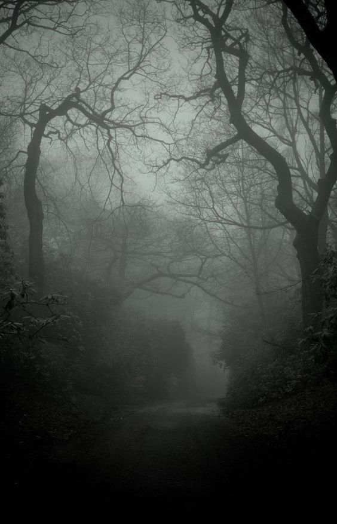
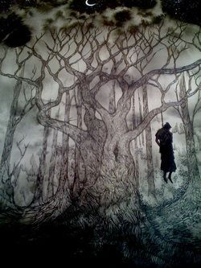
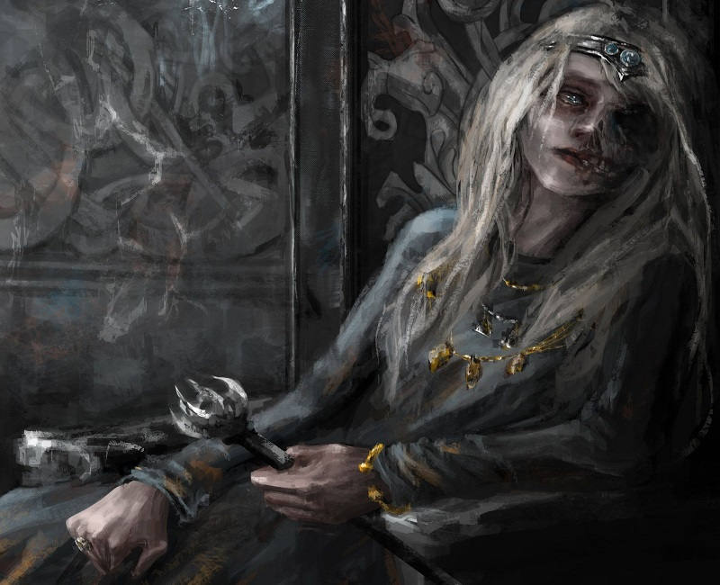
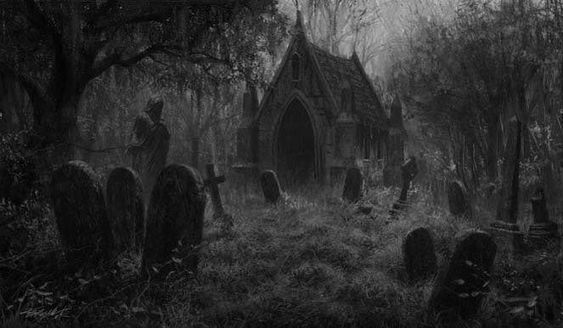
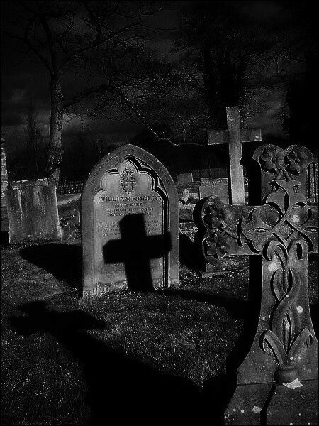
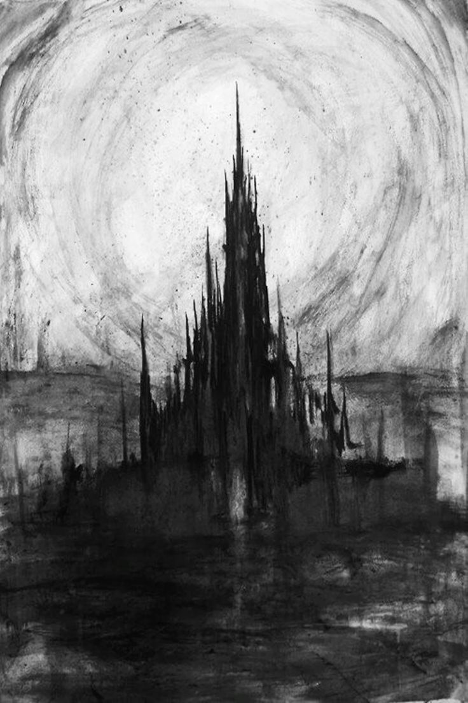

Vocês encontra o castelo da suposta rainha, contudo, mesmo com tamanha imensidão, se encontra vazio, entretanto, indo mais adiante, ambos avistam uma figura feminina, um tanto mórbida, porém bela, "é ela, Hela, a Deusa do submundo!" diz Sten. Ela os avistam e diz como uma voz um tanto candada: "Já sei o que vieram fazer aqui, posso fazer isso,então vamos logo com isto". Sten espantado então aceita sem hesitar e desaparece num piscar de olhos, "então só sobrou você pobre criança. Não tenha medo, ele foi para um lugar melhor, gostaria de se juntar a ele ou quer continuar nesse reino sombrio e vazio?"


